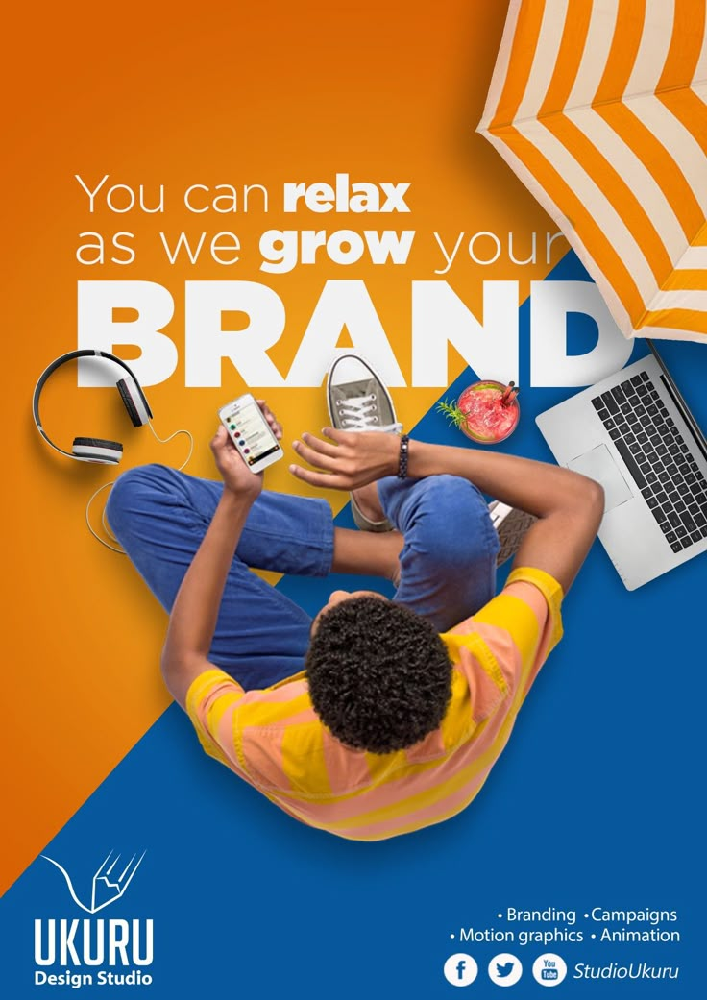

Today, I bridge the gap between technical complexity and human experience. Whether I'm writing PHP code, designing a UI in Figma, or running rigorous QA tests, my goal is always the same: to create digital products that feel reliable and welcoming.

I am currently available for freelance projects and full-time roles in web development and QA.
start a conversation